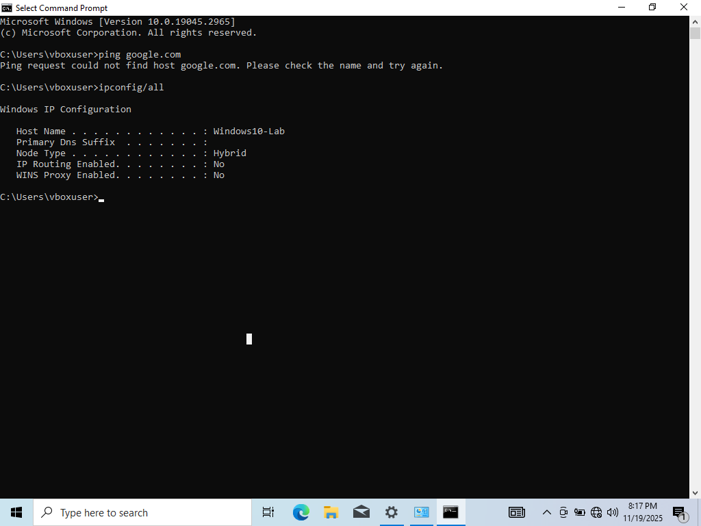
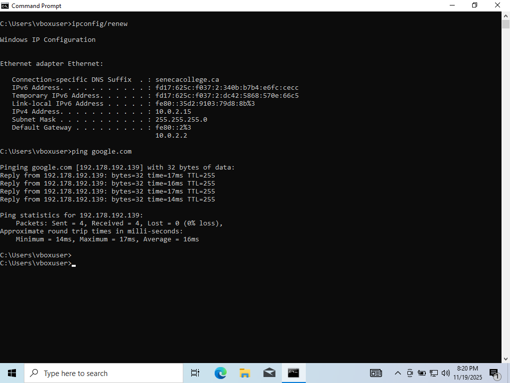
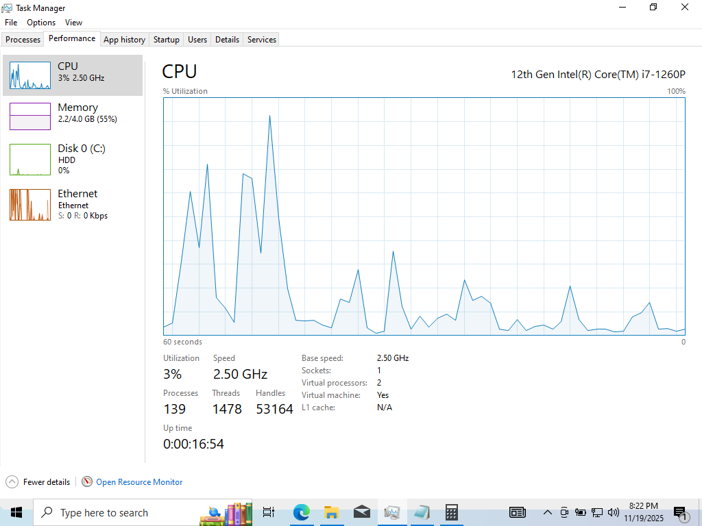
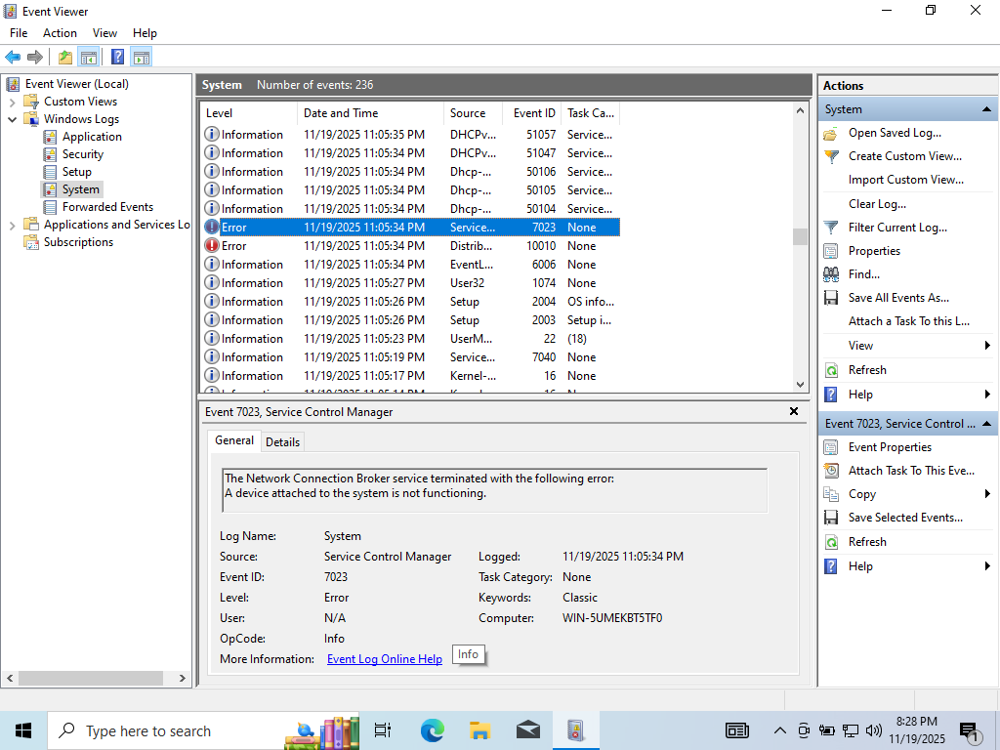
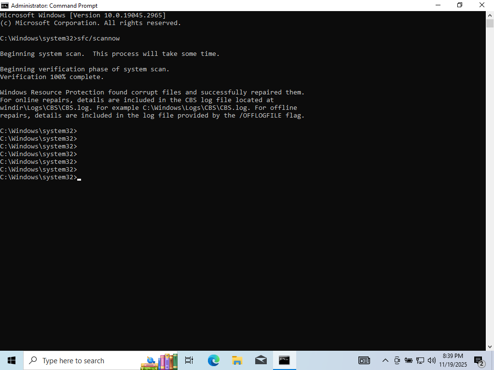
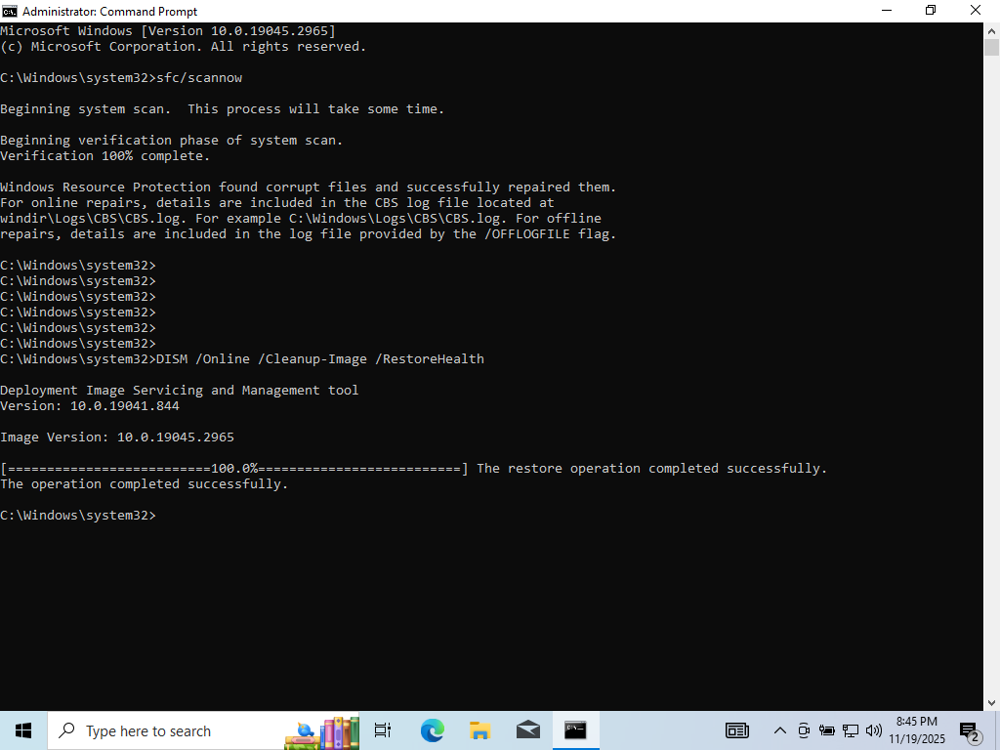
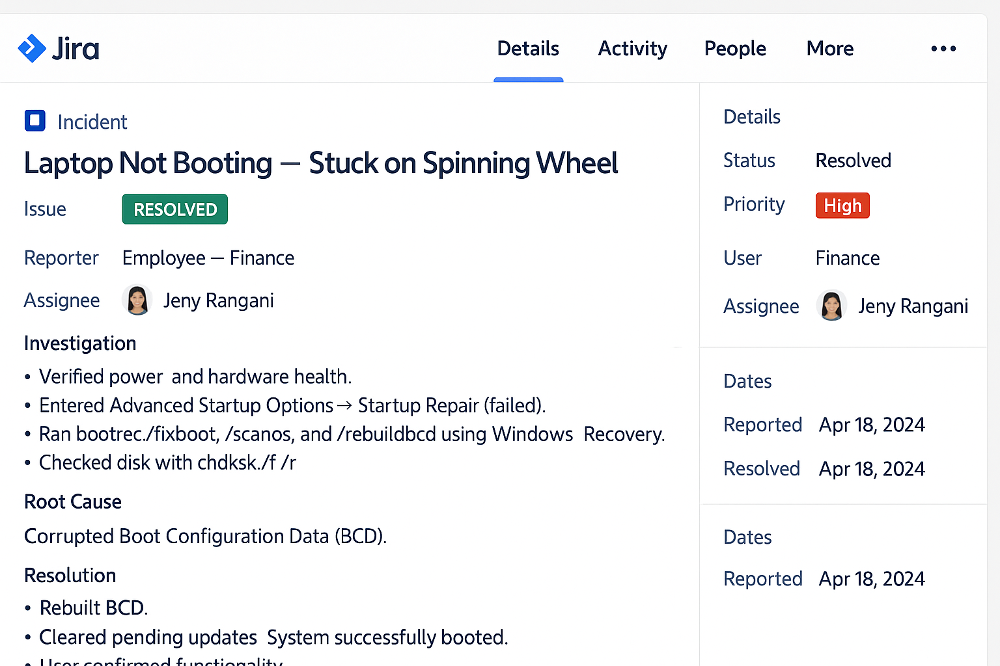
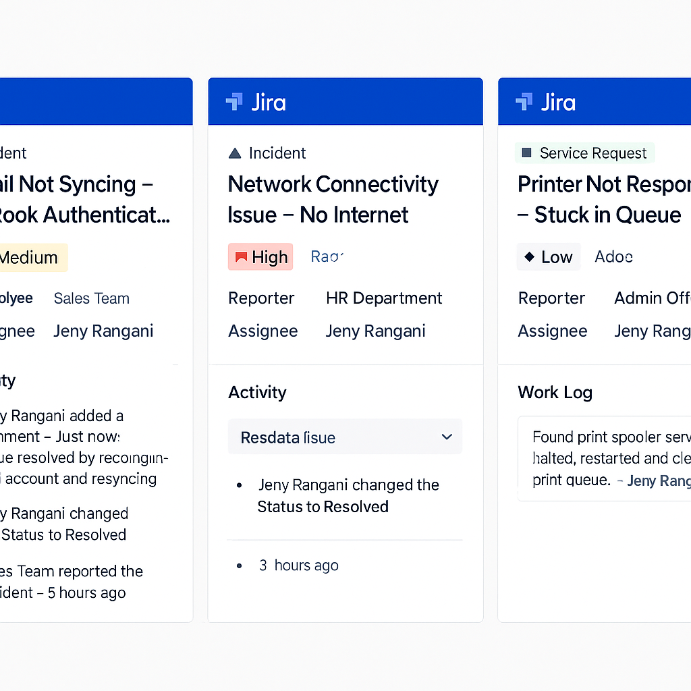

Aspiring IT Support Specialist | Google IT Support | CompTIA A+
About Me
I am a customer-focused and tech-savvy IT professional with hands-on experience in troubleshooting Windows & macOS,
using ticketing tools (ServiceNow, Jira, Zendesk), and managing users through Active Directory.
This portfolio showcases practical labs and projects demonstrating my skills in real-world IT support scenarios.
Technical Skills
Windows 10/11 Troubleshooting
macOS Troubleshooting
Active Directory (Users, Groups, GPO)
Ticketing Tools: ServiceNow, Jira, Zendesk
Remote Support: RDP, TeamViewer, AnyDesk
Networking: DHCP, DNS, VPN, IP Configurations
Virtual Machines: VirtualBox, VMware
IT Support Projects
🔧 Windows Troubleshooting Lab
Created a Windows 11 virtual machine to practice diagnosing and resolving real support issues including:
Network issues using ipconfig, ping, tracert
Fixing boot problems with Safe Mode & Startup Repair
Driver and update troubleshooting
Using Event Viewer, Task Manager, msconfig & DISM
🍎 macOS Support Simulation
Performed troubleshooting tasks on macOS including:
Wi-Fi & connectivity issues
Disk Utility repairs & First Aid
Time Machine backup configuration
User account and permissions setup
🛠 Active Directory Home Lab
Set up a Windows Server 2022 Domain Controller and practiced:
Creating users, groups, and OUs
Password resets & account lockout troubleshooting
Applying Group Policies (disable USB, enforce wallpaper, block apps)
Joining Windows machines to the domain
📨 ServiceNow Ticketing System Simulation
Built a mock IT help desk system and resolved sample tickets:
VPN not connecting
Locked-out user account
Printer not responding
Email not syncing in Outlook
Documented troubleshooting and resolutions following SLA guidelines.
🌐 Networking Troubleshooting Lab
Practiced troubleshooting common network issues:
IP conflicts & DHCP errors
DNS resolution issues
Wi-Fi connectivity issues
Mapping network drives & VPN configuration
Contact
Email: jenyrangani1@gmail.com
LinkedIn: linkedin.com/in/jeny-rangani
Windows Troubleshooting Project
These screenshots were captured from my Windows 10 virtual lab while practicing real-world IT support tasks,
including network troubleshooting, performance analysis, log investigation, startup diagnostics, and system repair.

Network Adapter Disabled
Simulated a “No Internet” issue by disabling the network adapter to reproduce user connectivity problems.
Ping Test Failure
Used ping to confirm loss of connectivity and validate that the issue was network-related.

Connectivity Restored
Re-enabled the adapter and renewed the IP lease, confirming success with a working ping.

Task Manager – CPU & Memory
Used Task Manager to identify processes causing high CPU and memory usage during performance issues.

Event Viewer Log Analysis
Reviewed System logs in Event Viewer to investigate warnings and errors related to services and drivers.

SFC System File Check
Ran sfc /scannow to scan and repair corrupted system files as part of OS repair tasks.

DISM Restore Health
Executed DISM to repair the Windows image and restore system integrity after troubleshooting issues.
Jira Ticketing System
These Jira-style screenshots highlight how I document, prioritize, and resolve IT incidents using a structured
ticketing workflow, similar to what is used in real service desk environments.

Jira Ticket – Laptop Not Booting
Full incident view showing investigation, root cause (corrupted BCD), and resolution steps for a Windows 11
system stuck on the spinning wheel screen.

Jira Tickets – Email, Network & Printer Issues
Summary cards for multiple incidents, including email not syncing, network connectivity issues, and a printer
stuck in queue, with clear priorities and assignee information.